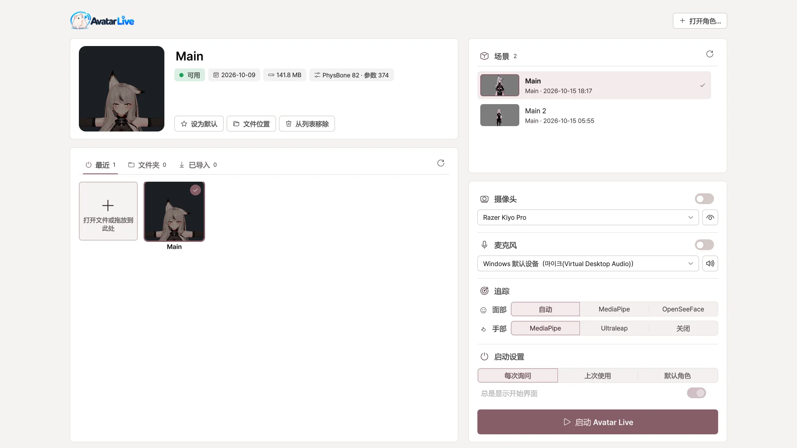
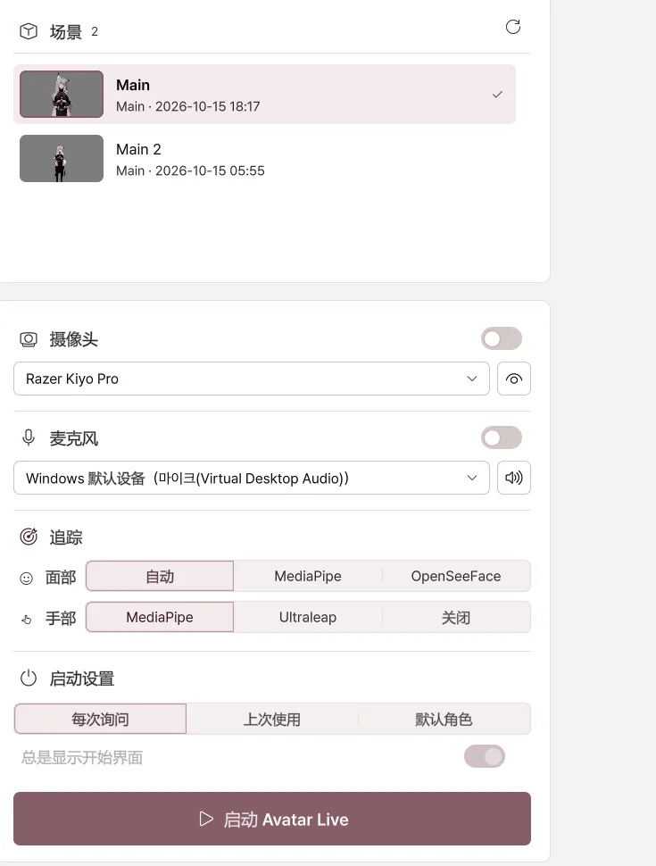
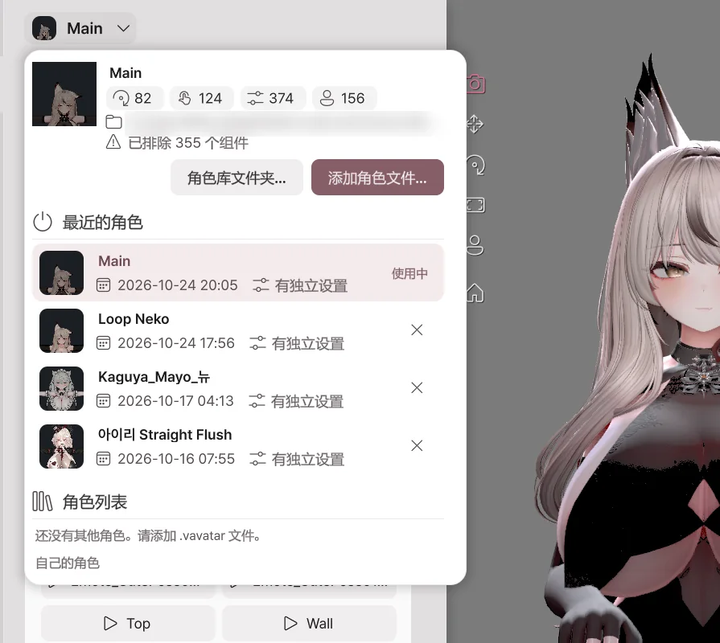

角色库
注册角色文件，选择要使用的角色和起始场景。
开始屏幕

| 按钮·项目 | 点击后会怎么样？ |
|---|---|
| 打开角色 | 将 .vavatar 或 .vrm 文件添加到列表中。也可以将文件拖放到窗口中。 |
| 最近 | 显示最近使用的角色。 |
| 文件夹 | 显示指定角色文件夹的文件。 |
| 导入的 | 显示通过导入的库导入的角色。 |
| 角色缩略图 | 选择要开始的角色。 |
| 默认指定 | 设置在以默认角色开始时使用的角色。 |
| 预览 | 查看所选角色的外观。 |
| 场景列表 | 选择要开始的舞台构成。 |
| 开始 Avatar Live | 使用所选角色和场景打开主屏幕。 |
选择要开始的设备

- 摄像头：打开右侧开关时，将使用启动时选择的网络摄像头。
- 麦克风：开启后将使用启动时选择的麦克风进行对嘴型同步。
- 脸·手：选择跟踪各部位的方式。执行后也可以在设备上更改。
用于下一次运行的角色
| 启动设置 | 下一次运行时 |
|---|---|
| 每次询问 | 在启动画面直接选择角色。 |
| 上次角色 | 使用上次使用的角色启动。 |
| 默认角色 | 使用设定的默认角色启动。 |
运行中更换

- 点击左上角的角色名称。
- 在列表中选择要更换的角色。
- 新文件通过“添加角色文件”导入。
要替换现有角色，请使用此列表。在同一场景中放置更多角色的角色添加是工作室的单独功能。
启动不顺时
按住 Shift 启动程序，可以使用不启用摄像头和麦克风的安全启动。确认设备问题后，再逐一在设备上开启。